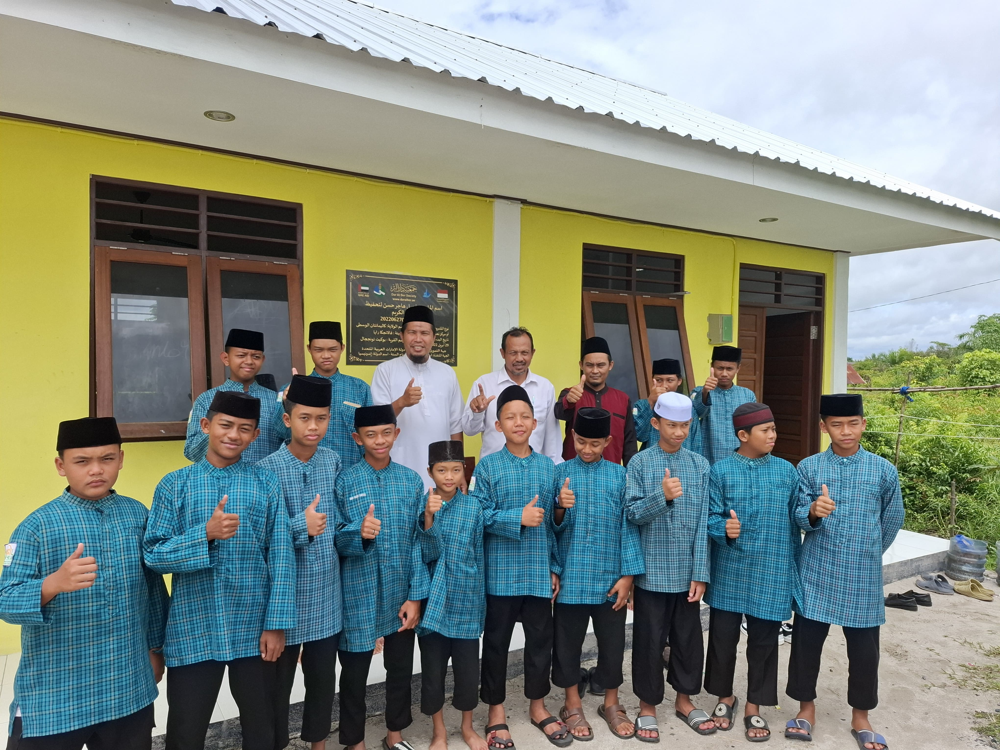
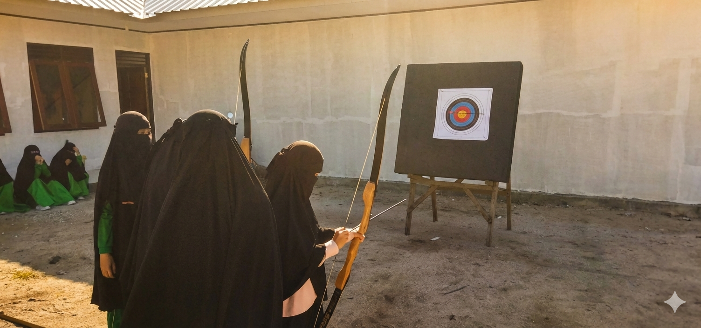

Mencetak Generasi
Rabbani & Berwawasan
Pendidikan menengah pertama dengan pemahaman السلف الصالح (Salaful Ummah). Membangun karakter, menjaga aqidah.

Mitra Terbaik Ayah Bunda.
Di tengah tantangan zaman, kami hadir sebagai Murabbi. Bukan sekadar sekolah, tapi rumah kedua dimana adab dijunjung tinggi sebelum ilmu, dan Al-Qur'an menjadi nafas dalam setiap pembelajaran sains dan teknologi.
B
Akreditasi
Pilar Pendidikan
Target 5 Juz + Tajwid
Hafalan mutqin bersanad dengan bacaan sesuai kaidah Tajwid.
Hafalan Mutun Ilmiyah
Menghafal matan dasar ilmu syar'i seperti Hadits Arbain.
Lingkungan Islami
Pergaulan yang terjaga, adab yang dikedepankan, dan sunnah yang diamalkan dalam kehidupan sehari-hari.
PPDB T.A. 2026/2027
Kuota terbatas. Daftarkan putra-putri Anda sekarang dan dapatkan potongan khusus gelombang pertama.
Investasi Pendidikan
*Termasuk makan 3 kali sehari.
Pertanyaan (FAQ)
SMP Islam Imam Nawawi memadukan kurikulum nasional dengan pendidikan diniyah. Fokus utama kami adalah pendidikan akidah, adab, dan ilmu syar’i sesuai pemahaman Salafush Shalih.
Ya, kami menyediakan fasilitas asrama (boarding) bagi siswa putra dan putri dengan program pembinaan intensif 24 jam, mencakup tahfidz, bahasa Arab, dan adab.
- Tauhid: Ushul Tsalatsah, Qawaid Arba’
- Fiqih: Fiqih Muyassar
- Hadits: Kitabul Jami dan Arbain Nawawi
- Sejarah: Kitab Syamail Muhammadiyah dan Sirah Nabawiyah (Syaikh Shafiyyurrahman al-Mubarakfuri)
- Bahasa Arab: Durus Minal Quran, Durusul Lughah, dan Al-Arabiyah Baina Yadaik
SMP Islam Imam Nawawi
Membangun Peradaban dengan Ilmu dan Adab.
Kontak
+62 858-2212-1305